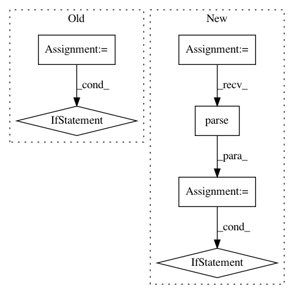

8479b6a979a0433c9b360c340fca454f03b0ff77,contrib/python/src/python/pants/contrib/python/checks/tasks/checkstyle/checker.py,PythonCheckStyleTask,get_nits,#PythonCheckStyleTask#Any#,96
Before Change
continue
nit_slice = python_file.line_range(nit._line_number)
for line_number in range(nit_slice.start, nit_slice.stop):
if noqa_line_filter(python_file, line_number):
break
else:
yield nit
def check_file(self, filename):
Process python file looking for indications of problems.
:param filename: (str) Python source filename
After Change
:param filename: str pointing to a file within the buildroot.
try:
python_file = PythonFile.parse(filename, root=get_buildroot())
except CheckSyntaxError as e:
yield e.as_nit()
return
if noqa_file_filter(python_file):
return
if self.options.suppress:
// Filter out any suppressed plugins
check_plugins = [plugin for plugin in self._plugins
if self.excluder.should_include(filename, plugin.name)]
else:
check_plugins = self._plugins
for plugin in check_plugins:
for i, nit in enumerate(plugin.checker(python_file)):
if i == 0:
// NB: Add debug log header for nits from each plugin, but only if there are nits from it.
self.context.log.debug("Nits from plugin {} for {}".format(plugin.name, filename))
if not nit.has_lines_to_display:
yield nit
continue
In pattern: SUPERPATTERN
Frequency: 3
Non-data size: 6
Instances
Project Name: pantsbuild/pants
Commit Name: 8479b6a979a0433c9b360c340fca454f03b0ff77
Time: 2016-04-07
Author: nhoward@twopensource.com
File Name: contrib/python/src/python/pants/contrib/python/checks/tasks/checkstyle/checker.py
Class Name: PythonCheckStyleTask
Method Name: get_nits
Project Name: hyperspy/hyperspy
Commit Name: 904e72663b634ce65641c3c99e2219e91aefc671
Time: 2017-01-10
Author: eric.prestat@gmail.com
File Name: hyperspy/misc/date_time_tools.py
Class Name:
Method Name: update_date_time_in_metadata
Project Name: theislab/scanpy
Commit Name: 0d44d1d50138e76bdc120cfacfd40c222e47b79e
Time: 2020-01-09
Author: flying-sheep@web.de
File Name: scanpy/external/tl/_pypairs.py
Class Name:
Method Name: _check_import